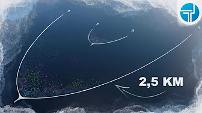

El reciclado de plástico es el proceso de recuperación de desechos de plásticos. Las tres principales finalidades del plástico reciclado son la reutilización directa, el aprovechamiento como materia prima para la fabricación de nuevos productos y su conversión como combustible o como nuevos productos
Hoy en día solo el 9% de todo el plástico que hemos producido y consumido hasta la actualidad a nivel mundial se ha reciclado, el 12% se ha incinerado, y la gran mayoría, el 79%, ha terminado en vertederos o en el medio ambiente. Los objetos de plástico también pueden llegar al mar desde vertederos, por el agua que fluye por los mismos. Además, también encontramos plásticos en el mar que proceden de vertidos de basura deliberados, de vertidos accidentales desde barcos, o de los efluentes de las estaciones depuradoras y plantas de tratamiento de aguas residuales. El 80% de los residuos que encontramos en el mar proviene de tierra, mientras que el 20% restante de la actividad marítima.
Suna de pelicula pero asi es; En los océanos se formaron cinco islas de plástico que atentan contra la fauna marina y el medio ambiente. Estas "manchas" están en el Atlántico, el Pacífico y el Índico. Un estudio realizado por la revista Plos One determinó que en los océanos hay cinco billones de piezas plásticas y que el 80% provienen de la tierra
Los plásticos que encontramos en superficie solo son la punta de iceberg, ya que representan menos del 15% de todos los plásticos que hay en el mar. Actualmente se han identificado cinco zonas de concentración conocidas como “sopas” de plásticos: una en el Índico, dos en el Atlántico (Norte y Sur) y dos en el Pacífico (Norte y Sur). Estas zonas superficiales tienen una elevada concentración de microplásticos. En las costas y el litoral también se pueden encontrar altas concentraciones de plásticos, especialmente en regiones con altas poblaciones costeras, con sistemas de gestión de residuos inadecuados, pesquerías intensivas, o turismo elevado. En el Mediterráneo también encontramos una gran cantidad de microplásticos, similar a las de las “sopas” de plásticos. De hecho, entre un 21% y 54% de todas las partículas de microplásticos del mundo se encuentran en la cuenca del Mediterráneo. Durante las investigaciones que Greenpeace llevó a cabo en 2015, se recogieron una media de 320 objetos de basura por cada 100 metros de playa muestreada en España, siendo el 75% de estos residuos objetos de plástico. Cada día se siguen abandonando 30 millones de latas y botellas de plástico en España, que pasan a contaminar nuestro entorno terrestre, costero y marino.
Las pequeñas acciones individuales o familiares que se adoptan desde los hogares pueden contribuir a reducir la contaminación del mar. ¡Pongamos remedio desde hoy mismo! Te damos algunas pistas... 7 propuestas para reducir la contaminación marítima:
The Ocean Cleanup es una organización no lucrativa muy publicitada que tiene la ambición de limpiar el 90 % del plástico de los océanos. En realidad, el efecto de la iniciativa en la basura flotante del mundo sería mínimo, según informaron unos investigadores en Science of the Total Environment.
La máquina The Ocean Cleanup, consta de varios tubos de 12 metros con pantallas de nylon debajo, que forman un recolector gigante. Al no ser una red, los peces pueden escapar por debajo. La máquina verá la luz en las próximas semanas, dispuestos a limpiar la isla de basura del Pacífico.
Te dejo el link de la pagina oficial para que le pegues un vistaso The Ocean Cleanup
Al igual que ocurre con materiales como el vidrio o el papel y el cartón, para reciclar plástico se siguen varias fases.
© 2022 Marca Registrada